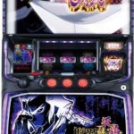

← 資料一覧 は行 革命機ヴァルヴレイヴ2 OFF ハイビリターン‐30 OFF 花笠 OFF スマスロ範馬刃牙 OFF Lバイオハザード ヴィレッジ OFF バイオハザードRE:3 OFF Lバイオハザード5 OFF 化物語 OFF  Lバジリスク絆2天善 OFF バベル OFF L押忍！番長４ OFF Lバンドリ OFF L必殺仕置人 OFF 秘宝伝 OFF ビッグドリーム THE GOLDEN PUSHER OFF プリズムナナ OFF 転生シャッター狙い実践データ OFF L北斗の拳 OFF L北斗の拳 スロ塾流無想転生打法 OFF 北斗の拳 転生の章2 OFF L北斗の拳 優遇冷遇について OFF BIRDIE WING ‐Golf Girls’ Story‐ OFF